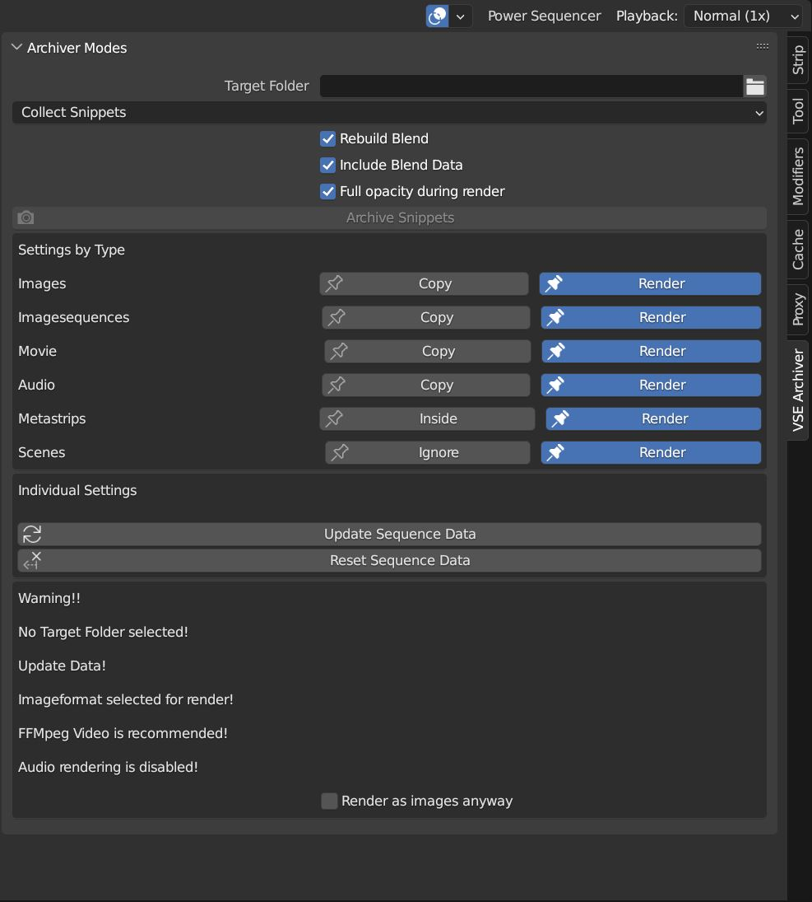

What is VSE-Archiver?

The VSE Archiver is a Blender addon supposed to produce a back-up of your video project. It will create an Archive Folder you specify, collects all the footage used into a destinct folder structure and relinks all media in the new blend file created in the folder. This results in a handy BackUp Folder which includes only the media used consolidated into an ordered folder structure ready to be archived or send to a customer demanding the project files.
- Footage distributed over your system will end up in a clean folder structure.
- Project size will be decreased because only the used footage will be collected
- Decide whether you want to copy the original footage or render the indiviudal strips
- Footage includes Images, Imagesequences, Video, Audio and Fonts which will be found either used in vse strips or mentioned in the blend data
Install
- install by File/User Preferences.../Addons/Install from File/
Install Add-on from the zip-File and check the checkbox.
In Blender open the "Edit"-dropdown menu. Choose "Preferences...". In the side bar click on Add-ons. Click on "Install..." at the top of the window. Locate the "vse-archiver_3-4_V0.zip" on your computer and double click or click "Install Addon" in the bottom of the window. Check the check box next to "Puzzle Ur Print". In order to have the "Puzzle Ur Print" by loaded on default with Blender click "Save User Settings" under the Hamburgermenu in the left bottom corner and exit User Preferences. The "Puzzle Ur Print" Panel will now appear in the right side panel (n-panel) of the 3D-Viewport.
Typical Process

- Find the Addon in the VSE toolbar (n-menu, to the right)
- Initialize the addon by clicking the initialize Button
- Specify a Target Folder where all the footage will be collected to. It must be an absolute path!! Uncheck the checkmark “relative path” in the right menu when choosing a folder
- Choose If you either want to collect the original footage (simple copy of all source files to the new Archiv folder structure) or collect the snippets (renders the individual sequences into the new Archiv folder structure)
- Adjust settings if you want something special
- Click “Archiv Originals” or “Archiv Snippets”, respectively (May take a while)
- The addon will now go through all scenes of the blend file and either copy all sourcefiles used in the VSE or render all sequence strips (“Collect Snippets” allows a mixed mode)
- Addon saves the blend file into the target folder
- Relinks all the sequences and Blend data footage to the new location in the archive folder.
- Makes the pathes relative
- Blender awakes in the new Archiv file
Main Modes

The VSE Archiver offers two different approaches of archiving your footage:
- Collect Sources: Copies the original source media
- Collect Snippets: (primarily) Renders sequence strips and save them in the Archive Folder. However, copy or render can be decided either per media type or per strip
Collect Sources

This mode is used to archive all original source files by copying them into the archive folder and relink them. Imagine the case where you filmed 10h hours, but only used 3 min of the material. There will be a lot unused material. Use this option to get an archive with only the used footage and get rid of the shaky shots you dared to delete, but eventually never used.
Pro
Contra
Options

Collect Snippets

The Collect Snippets mode is primarily designed to render individual strips into video files. However, you can decide per type or for the individual sequence whether you want it to be rendered or the source files copied. For example in most cases it doesnot make sense to render a video from a single image. The source should be copied instead. An image sequence might be more handy to be archived as video file. Individual setting overwrites the type setting.
Image, Imagesequence, Movie, Audio: decide whether sequences of that type are rendered or the source files are copied.
Metastrips: can be rendered as one strip or the inside is handled as individual strips
Scene strips: can be rendered or ignored
Generalsettings
- Include Blend Data:(same as above) when this is checked the active blend file will be saved into the archive and all footage is relinked. When unchecked only the source material is copied into the archive.
- Rebuild Blendfile:(same as above) Blender sometimes saves links to video related media in the blend data of the file. When checked the addon will look for Images, Imagesequences, Video, Audio and Fonts and save them in the archive. Important for example when: 1 . you do compositor stuff (colorgrading, stabilizing footage, vfx) in another scene via the compositor and use a scene strip in the vse 2. You used another font then blender default 3. You use the scene strip of simple 3D scene with image textures…
- Full Opacity during Render: When this checkbox is activated the addon will remove the alpha fade of the sequencer strips for rendering and add them back to the newly rendered and replaced strip.
Settings by type
Individual Settings
When you select a sequence (active sequence) you can set copy or render (or for scene or meta strips as mentioned in settings by type) for this specific sequence. The individual setting will overwrite the settings set by type.
Update Sequence Data: The addon collects information about the sequences when initialized. When you add or remove sequences, this data needs to be updated by clicking this button. An information text will appear, when this is necessary
Reset Sequence Data: Resets all individual strip settings to the settings defined by type
Warning panel

There are 4 types of connector modes.
- Stick
- Male-Female (mf)
- Flat
- Planar
Folder Structure of the Archive

Audio blub
Random Details:
When you select a Connector several colorful symbols appear around the connecotor's origin (only avaiable when the addon is installed and initalized). These are controls to change several settings and, hence, the appearance of the connector. From bottom to top:
- Transparency is not available in most videoformats.
- Audio strips will be rendered as video file due to blenders (or mine?) inability to render mp3, wav or similar audio files. The addon will show a warning when the render format is not
- Rendered movie strips will be without audio. This can only be avoided by packaging both together in a metastrip to get the video file with its audio
- strips will be ignored for rendering
- The addon will not delete files. However, the addon will overwrite all files in its way (same path and file names). Thus, we strongly recommend using an empty folder as new archive destination. We are not responsible for any data lost.
- Rendersettings will be used as defined in the active scene where the archive process was started.
- Rendered as set in render settings of the initial scene the addon is started from. However, different Colormanagement, Postprocessing, in different scenes will not be homogeniesded
- In addition, using any Gizmos will also change the settings in the panel, too. This can also allow to figure out, what (the heck) 'this' gizmo does.
- All sequences will be rendered independent of the set frame range. However, strips in negative frame range not get rendered.